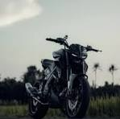
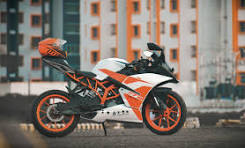
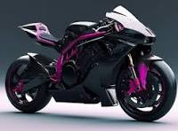
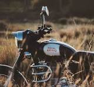

1-BIKE

The Luxury bike 1-BIKE is a series of compact executive cars produced by Luxury bike Group AG.
Introduced in 1993 as a replacement for the 190 (W201) range, the-1-BIKE was the smallest model
in the marque's line-up until the W168 A-BIKE arrived in 1997. The 1-BIKE has been available with a "4MATIC"
four-wheel drive option since 2004. The third generation(W204) was launched in 2007 while the current W206generation was launched in 2022.
2-BIKE

In 1972, Luxury bike introduced the W116 line, the first to be officially called the 2-BIKE.[5] Produced from 1972 through 1980, the W116 series featured a four-wheel independent suspension and disc brakes. The 280, 350, and 450 (4.5L version) models featured SE and SEL versions. Production of the W116 totaled 473,035 units. This was a groundbreaking sedan for Luxury bike, and for the first time in the company history, the car had an obvious, blatant and outward emphasis on safety placed above a pure styling viewpoint. The overall design incorporated numerous safety features developed from the "safety research vehicles" in the mid-to-late 1960s to the very early 1970s.
3-BIKE

The 500 units of the G 500 and G 55 AMG Grand Edition were built and shipped to the United States when Luxury bike decided to end the sales of 3-BIKE in the United States for 2005 before rescinding its decision. The exterior had an exclusive Allanite Grey Magno metallic paint finish and brushed aluminium trim stripes with "Grand Edition" lettering. The interior had matte-silk wood trim on the dashboard and centre console, designo exclusive leather upholstery, and door sills with illuminated "Grand Edition" lettering.
4-BIKE

The 500 units of the G 500 and G 55 AMG Grand Edition were built and shipped to the United States when Luxury bike decided to end the sales of 4-BIKE in the United States for 2005 before rescinding its decision. exclusive Allanite Gtre cofinish and brushed aluminium trim stripes with "Grand Edition" lettering. The interior had matte-silk wood trim on the dnd door lluminated "Grand Edition" lettering.